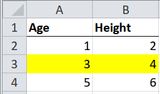
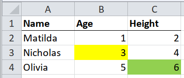
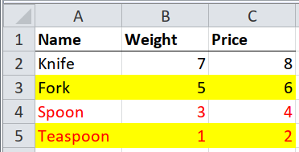
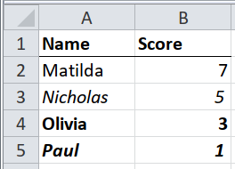

SpreadSheet Munging Strategies in Python - Meaningful Formats#
Meaningful Formats#
updated : September 24, 2024
This is part of a series of blog posts about extracting data from spreadsheets using Python. It is based on the book written by Duncan Garmonsway, which was written primarily for R users. Links to the other posts are on the sidebar.
The key takeaway is this - you understand your data layout; use the tools to achieve your end goal. xlsx_cells offers a way to get the cells in a spreadsheet into individual rows, with some metadata. The final outcome however relies on your understanding of the data layout and its proper application.
This is an excerpt from Duncan’s book regarding meaningful formats :
Sometimes whole rows in a table are highlighted by formatting them with, say, a bright yellow fill. The highlighting could mean “this observation should be ignored”, or “this product is no longer available”. Different colours could mean different levels of a hierarchy, e.g. green for “pass” and red for “fail”.
The examples below highlight various ways of dealing with meaningfully formatted spreadsheets. Let’s dive in.
Case 1 : Meaningfully Formatted Rows#

The goal is to capture the color as part of our final output. We’ll make use of the xlsx_cells function from pyjanitor - under the hood, it uses openpyxl:
# pip install pyjanitor
import pandas as pd
import janitor as jn
import sys
import numpy as np
filename = "Data_files/worked-examples.xlsx"
print('pandas version: ', pd.__version__)
print('janitor version: ', jn.__version__)
print('python version: ', sys.version)
print('numpy version: ', np.__version__)
pandas version: 3.1.0
janitor version: 0.32.65
python version: 3.11.17 (main, Oct 1 2026, 14:32:31) [GCC 13.3.0]
numpy version: 2.4.6
frame = jn.xlsx_cells(filename, sheetnames="highlights", fill=True)
frame
| value | internal_value | coordinate | row | column | data_type | is_date | number_format | fill | |
|---|---|---|---|---|---|---|---|---|---|
| 0 | Age | Age | A1 | 1 | 1 | s | False | General | {'patternType': None, 'fgColor': {'rgb': '0000... |
| 1 | Height | Height | B1 | 1 | 2 | s | False | General | {'patternType': None, 'fgColor': {'rgb': '0000... |
| 2 | 1 | 1 | A2 | 2 | 1 | n | False | General | {'patternType': None, 'fgColor': {'rgb': '0000... |
| 3 | 2 | 2 | B2 | 2 | 2 | n | False | General | {'patternType': None, 'fgColor': {'rgb': '0000... |
| 4 | 3 | 3 | A3 | 3 | 1 | n | False | General | {'patternType': 'solid', 'fgColor': {'rgb': 'F... |
| 5 | 4 | 4 | B3 | 3 | 2 | n | False | General | {'patternType': 'solid', 'fgColor': {'rgb': 'F... |
| 6 | 5 | 5 | A4 | 4 | 1 | n | False | General | {'patternType': None, 'fgColor': {'rgb': '0000... |
| 7 | 6 | 6 | B4 | 4 | 2 | n | False | General | {'patternType': None, 'fgColor': {'rgb': '0000... |
You can view a single row in the fill column:
frame.fill[0]
{'patternType': None,
'fgColor': {'rgb': '00000000', 'type': 'rgb', 'tint': 0.0},
'bgColor': {'rgb': '00000000', 'type': 'rgb', 'tint': 0.0}}
Steps:
get the headers
get the data(numbers)
get the colours
combine to create the final DataFrame
headers:
headers = frame.loc[frame.row == "1", "value"].array
headers
<StringArray>
['Age', 'Height']
Length: 2, dtype: str
data:
booleans = frame.data_type == "n"
data = frame.loc[booleans, "value"].array
# There are only two columns in the spreadsheet;
# we'll use that knowledge in reshaping the integer values:
data = data.astype(np.int8).reshape((-1, 2))
data
array([[1, 2],
[3, 4],
[5, 6]], dtype=int8)
colours:
fill_colour = frame.fill.str.get("fgColor").str.get("rgb").array
# keep only rows related to the integers:
fill_colour = fill_colour[booleans]
# the number of columns is 2,
# so we only need to jump 2 steps
# to get the corresponding colour per row
fill_colour = fill_colour[::2]
fill_colour
<NumpyExtensionArray>
['00000000', 'FFFFFF00', '00000000']
Length: 3, dtype: object
outcome = pd.DataFrame(data, columns=headers).assign(fill_colour=fill_colour)
outcome
| Age | Height | fill_colour | |
|---|---|---|---|
| 0 | 1 | 2 | 00000000 |
| 1 | 3 | 4 | FFFFFF00 |
| 2 | 5 | 6 | 00000000 |
Case 2 : Meaningfully Formatted Cells#

In the pic above, the table has different colors for different cells. xlsx_cells comes in handy again, and the focus here, just as in Case 1, is the cell’s fill attribute.
frame = jn.xlsx_cells(filename, sheetnames="annotations", fill=True).astype(
{"row": np.int8, "column": np.int8}
)
frame
| value | internal_value | coordinate | row | column | data_type | is_date | number_format | fill | |
|---|---|---|---|---|---|---|---|---|---|
| 0 | Name | Name | A1 | 1 | 1 | s | False | General | {'patternType': None, 'fgColor': {'rgb': '0000... |
| 1 | Age | Age | B1 | 1 | 2 | s | False | General | {'patternType': None, 'fgColor': {'rgb': '0000... |
| 2 | Height | Height | C1 | 1 | 3 | s | False | General | {'patternType': None, 'fgColor': {'rgb': '0000... |
| 3 | Matilda | Matilda | A2 | 2 | 1 | s | False | General | {'patternType': None, 'fgColor': {'rgb': '0000... |
| 4 | 1 | 1 | B2 | 2 | 2 | n | False | General | {'patternType': None, 'fgColor': {'rgb': '0000... |
| 5 | 2 | 2 | C2 | 2 | 3 | n | False | General | {'patternType': None, 'fgColor': {'rgb': '0000... |
| 6 | Nicholas | Nicholas | A3 | 3 | 1 | s | False | General | {'patternType': None, 'fgColor': {'rgb': '0000... |
| 7 | 3 | 3 | B3 | 3 | 2 | n | False | General | {'patternType': 'solid', 'fgColor': {'rgb': 'F... |
| 8 | 4 | 4 | C3 | 3 | 3 | n | False | General | {'patternType': None, 'fgColor': {'rgb': '0000... |
| 9 | Olivia | Olivia | A4 | 4 | 1 | s | False | General | {'patternType': None, 'fgColor': {'rgb': '0000... |
| 10 | 5 | 5 | B4 | 4 | 2 | n | False | General | {'patternType': None, 'fgColor': {'rgb': '0000... |
| 11 | 6 | 6 | C4 | 4 | 3 | n | False | General | {'patternType': 'solid', 'fgColor': {'rgb': 'F... |
Steps:
get the headers
get the data in separate columns(strings, numbers)
get the colours
combine to create the final DataFrame
headers:
# all the headers are on the first row
# retain the column positions,
# so we can link them back to the data and colours
headers = frame.loc[frame.row.eq(1), ["value", "column"]]
headers.columns = ["measure", "column"]
headers
| measure | column | |
|---|---|---|
| 0 | Name | 1 |
| 1 | Age | 2 |
| 2 | Height | 3 |
data:
# the string values have a data type of 's'
# and the row numbers are greater than 1
# we'll keep the row number so we can correctly
# match with the measurements(age, height)
booleans = frame.row.gt(1) & frame.data_type.eq("s")
students = frame.loc[booleans, ["value", "row"]]
students.columns = ["name", "row"]
students
| name | row | |
|---|---|---|
| 3 | Matilda | 2 |
| 6 | Nicholas | 3 |
| 9 | Olivia | 4 |
# the scores values have a data type of 'n'
# and the row numbers are greater than 1
# we'll keep the row and column columns
# so we can correctly
# match with the student names
booleans = frame.row.gt(1) & frame.data_type.eq("n")
numbers = frame.loc[booleans, ["value", "row", "column"]]
numbers
| value | row | column | |
|---|---|---|---|
| 4 | 1 | 2 | 2 |
| 5 | 2 | 2 | 3 |
| 7 | 3 | 3 | 2 |
| 8 | 4 | 3 | 3 |
| 10 | 5 | 4 | 2 |
| 11 | 6 | 4 | 3 |
colours:
fill_colour = frame.fill.str.get("fgColor").str.get("rgb")
# keep only rows for numbers:
fill_colour = fill_colour[booleans]
fill_colour
4 00000000
5 00000000
7 FFFFFF00
8 00000000
10 00000000
11 FF92D050
Name: fill, dtype: object
combine into a single DataFrame:
outcome = (
numbers.assign(fill_colour=fill_colour)
.merge(students, on="row")
.merge(headers, on="column")
.loc[:, ["name", "measure", "value", "fill_colour"]]
)
outcome
| name | measure | value | fill_colour | |
|---|---|---|---|---|
| 0 | Matilda | Age | 1 | 00000000 |
| 1 | Matilda | Height | 2 | 00000000 |
| 2 | Nicholas | Age | 3 | FFFFFF00 |
| 3 | Nicholas | Height | 4 | 00000000 |
| 4 | Olivia | Age | 5 | 00000000 |
| 5 | Olivia | Height | 6 | FF92D050 |
Case 3 : Layered Meaningful Formatting#

In this case, we have formats for fill and font.
The format applies to the entire row.
Steps:
get the headers
get the data in separate columns(kitchen_items, price, weight)
get the colours (fill and font)
combine to create the final DataFrame
frame = jn.xlsx_cells(filename, sheetnames="combined-highlights", fill=True, font=True)
frame = frame.astype({"row": np.int8, "column": np.int8})
frame
| value | internal_value | coordinate | row | column | data_type | is_date | number_format | fill | font | |
|---|---|---|---|---|---|---|---|---|---|---|
| 0 | Name | Name | A1 | 1 | 1 | s | False | General | {'patternType': None, 'fgColor': {'rgb': '0000... | {'name': 'Calibri', 'family': 2.0, 'sz': 11.0,... |
| 1 | Weight | Weight | B1 | 1 | 2 | s | False | General | {'patternType': None, 'fgColor': {'rgb': '0000... | {'name': 'Calibri', 'family': 2.0, 'sz': 11.0,... |
| 2 | Price | Price | C1 | 1 | 3 | s | False | General | {'patternType': None, 'fgColor': {'rgb': '0000... | {'name': 'Calibri', 'family': 2.0, 'sz': 11.0,... |
| 3 | Knife | Knife | A2 | 2 | 1 | s | False | General | {'patternType': None, 'fgColor': {'rgb': '0000... | {'name': 'Calibri', 'family': 2.0, 'sz': 11.0,... |
| 4 | 7 | 7 | B2 | 2 | 2 | n | False | General | {'patternType': None, 'fgColor': {'rgb': '0000... | {'name': 'Calibri', 'family': 2.0, 'sz': 11.0,... |
| 5 | 8 | 8 | C2 | 2 | 3 | n | False | General | {'patternType': None, 'fgColor': {'rgb': '0000... | {'name': 'Calibri', 'family': 2.0, 'sz': 11.0,... |
| 6 | Fork | Fork | A3 | 3 | 1 | s | False | General | {'patternType': 'solid', 'fgColor': {'rgb': 'F... | {'name': 'Calibri', 'family': 2.0, 'sz': 11.0,... |
| 7 | 5 | 5 | B3 | 3 | 2 | n | False | General | {'patternType': 'solid', 'fgColor': {'rgb': 'F... | {'name': 'Calibri', 'family': 2.0, 'sz': 11.0,... |
| 8 | 6 | 6 | C3 | 3 | 3 | n | False | General | {'patternType': 'solid', 'fgColor': {'rgb': 'F... | {'name': 'Calibri', 'family': 2.0, 'sz': 11.0,... |
| 9 | Spoon | Spoon | A4 | 4 | 1 | s | False | General | {'patternType': None, 'fgColor': {'rgb': '0000... | {'name': 'Calibri', 'family': 2.0, 'sz': 11.0,... |
| 10 | 3 | 3 | B4 | 4 | 2 | n | False | General | {'patternType': None, 'fgColor': {'rgb': '0000... | {'name': 'Calibri', 'family': 2.0, 'sz': 11.0,... |
| 11 | 4 | 4 | C4 | 4 | 3 | n | False | General | {'patternType': None, 'fgColor': {'rgb': '0000... | {'name': 'Calibri', 'family': 2.0, 'sz': 11.0,... |
| 12 | Teaspoon | Teaspoon | A5 | 5 | 1 | s | False | General | {'patternType': 'solid', 'fgColor': {'rgb': 'F... | {'name': 'Calibri', 'family': 2.0, 'sz': 11.0,... |
| 13 | 1 | 1 | B5 | 5 | 2 | n | False | General | {'patternType': 'solid', 'fgColor': {'rgb': 'F... | {'name': 'Calibri', 'family': 2.0, 'sz': 11.0,... |
| 14 | 2 | 2 | C5 | 5 | 3 | n | False | General | {'patternType': 'solid', 'fgColor': {'rgb': 'F... | {'name': 'Calibri', 'family': 2.0, 'sz': 11.0,... |
headers:
# headers are on the first row
# we'll rely on the `column` column
# to align with the weight and price extracts
headers = frame.loc[frame.row.eq(1), ["value", "column"]]
headers
| value | column | |
|---|---|---|
| 0 | Name | 1 |
| 1 | Weight | 2 |
| 2 | Price | 3 |
data:
# kitchen_items are string datatype
# they are on rows > 1
booleans = frame.row.gt(1) & frame.data_type.eq("s")
kitchen_items = frame.loc[booleans, "value"].array
kitchen_items
<StringArray>
['Knife', 'Fork', 'Spoon', 'Teaspoon']
Length: 4, dtype: str
# price and weight are number datatypes
# they are on rows > 1
booleans = frame.row.gt(1) & frame.data_type.eq("n")
# retrieve column positions:
columns = frame.loc[booleans, "column"]
numbers = frame.loc[booleans, "value"].astype(np.int8).array
# we know there are only two number columns - weight and price
# we'll use that knowledge in reshaping:
numbers = numbers.reshape((-1, 2))
numbers
<NumpyExtensionArray>
[
[7, 8],
[5, 6],
[3, 4],
[1, 2]
]
Shape: (4, 2), dtype: int8
colors:
fill_colour = frame.fill.str.get("fgColor").str.get("rgb")
font_colour = frame.font.str.get("color").str.get("rgb")
# keep only rows aligned with the numbers:
fill_colour = fill_colour[booleans].array
font_colour = font_colour[booleans].array
# we know there are only two number columns
# this means we only need to jump two steps per colour:
fill_colour = fill_colour[::2]
font_colour = font_colour[::2]
fill_colour
<NumpyExtensionArray>
['00000000', 'FFFFFF00', '00000000', 'FFFFFF00']
Length: 4, dtype: object
font_colour
<NumpyExtensionArray>
['FF000000', None, 'FFFF0000', 'FFFF0000']
Length: 4, dtype: object
Combine into one DataFrame:
# filter headers for only rows
# that align with the weight and price extracts
headers = headers.loc[headers.column.isin(columns), "value"].array
outcome = pd.DataFrame(numbers, columns=headers)
outcome = outcome.assign(
kitchen_item=kitchen_items, fill_colour=fill_colour, font_colour=font_colour
).loc[:, ["kitchen_item", "Price", "Weight", "fill_colour", "font_colour"]]
outcome
| kitchen_item | Price | Weight | fill_colour | font_colour | |
|---|---|---|---|---|---|
| 0 | Knife | 8 | 7 | 00000000 | FF000000 |
| 1 | Fork | 6 | 5 | FFFFFF00 | NaN |
| 2 | Spoon | 4 | 3 | 00000000 | FFFF0000 |
| 3 | Teaspoon | 2 | 1 | FFFFFF00 | FFFF0000 |
Note that an alternative would be to use the row and column positions to reshape the data - similar to the solution in case 2
Case 4 : Hierarchies in Formatting#

In the pic above, notice the differences in the formatting (bold, italic, bold and italic, none). In Duncan’s book, he offers a suggestion on what these different levels of hierarchy might mean :
none - good
italic - satisfactory
bold - poor
bold and italic - fail
Again, the formatting is applied to the entire row.
frame = jn.xlsx_cells(filename, sheetnames="highlight-hierarchy", font=True)
frame = frame.astype({'row':np.int8, 'column':np.int8})
frame
| value | internal_value | coordinate | row | column | data_type | is_date | number_format | font | |
|---|---|---|---|---|---|---|---|---|---|
| 0 | Name | Name | A1 | 1 | 1 | s | False | General | {'name': 'Calibri', 'family': 2.0, 'sz': 11.0,... |
| 1 | Score | Score | B1 | 1 | 2 | s | False | General | {'name': 'Calibri', 'family': 2.0, 'sz': 11.0,... |
| 2 | Matilda | Matilda | A2 | 2 | 1 | s | False | General | {'name': 'Calibri', 'family': 2.0, 'sz': 11.0,... |
| 3 | 7 | 7 | B2 | 2 | 2 | n | False | General | {'name': 'Calibri', 'family': 2.0, 'sz': 11.0,... |
| 4 | Nicholas | Nicholas | A3 | 3 | 1 | s | False | General | {'name': 'Calibri', 'family': 2.0, 'sz': 11.0,... |
| 5 | 5 | 5 | B3 | 3 | 2 | n | False | General | {'name': 'Calibri', 'family': 2.0, 'sz': 11.0,... |
| 6 | Olivia | Olivia | A4 | 4 | 1 | s | False | General | {'name': 'Calibri', 'family': 2.0, 'sz': 11.0,... |
| 7 | 3 | 3 | B4 | 4 | 2 | n | False | General | {'name': 'Calibri', 'family': 2.0, 'sz': 11.0,... |
| 8 | Paul | Paul | A5 | 5 | 1 | s | False | General | {'name': 'Calibri', 'family': 2.0, 'sz': 11.0,... |
| 9 | 1 | 1 | B5 | 5 | 2 | n | False | General | {'name': 'Calibri', 'family': 2.0, 'sz': 11.0,... |
Steps:
get the data in separate columns(score, grade)
get the fonts (bold, italics)
combine to create the final DataFrame
data:
booleans = frame.row.gt(1) & frame.data_type.eq('s')
students = frame.loc[booleans, 'value'].array
students
<StringArray>
['Matilda', 'Nicholas', 'Olivia', 'Paul']
Length: 4, dtype: str
booleans = frame.row.gt(1) & frame.data_type.eq('n')
score = frame.loc[booleans, 'value'].array.astype(np.int8)
score
array([7, 5, 3, 1], dtype=int8)
fonts:
bold = frame.font.str.get("b")[booleans].to_numpy()
bold
array([False, False, True, True])
italics = frame.font.str.get("i")[booleans][booleans].to_numpy()
italics
array([False, True, False, True])
condlist = [~bold & ~italics, ~bold & italics, bold & ~italics]
choicelist = ['good','satisfactory','poor']
grade = np.select(condlist, choicelist, default='fail')
grade
array(['good', 'satisfactory', 'poor', 'fail'], dtype='<U12')
Combine into a single DataFrame:
outcome = {'name':students, 'bold':bold,'italics':italics,'score':score,'grade':grade}
outcome = pd.DataFrame(outcome)
outcome
| name | bold | italics | score | grade | |
|---|---|---|---|---|---|
| 0 | Matilda | False | False | 7 | good |
| 1 | Nicholas | False | True | 5 | satisfactory |
| 2 | Olivia | True | False | 3 | poor |
| 3 | Paul | True | True | 1 | fail |
Comments#